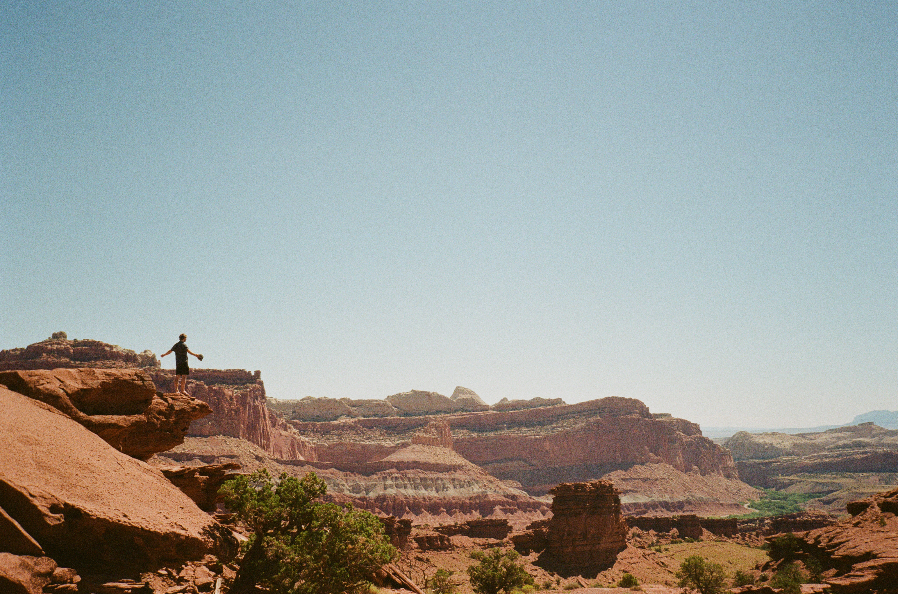

On the road again

Two weeks ago, I boarded a flight to Denver, Colorado.
This was the west-est I had ever been, except for a very short trip to Vancouver.
But that's a different story, for a different time.
After two years living in Denmark, and more than three months in the east coast, I was stoked to see mountains.
Don't get me wrong, I have always preferred a beach over a mountain. But one can hardly disconnect and properly relax in most beaches.
And living next to one, well, it's starting to lose its charm. So recently I have been more and more drawn to the mountains.
The plan was ambitious: drive from Boulder to San Francisco in ten days, passing by several national parks.
The crew of our ship (a Dodge Hornet) was just Matt and me.
Our cargo: 80 meters of rope, one suitcase, two backpacks and two sleeping bags.
During these two weeks, something inside me changed in a way that I am not sure I can comprehend just yet.
I believe we grow, and we mature, and we change, in a discrete manner.
To our friends and family it might seem like we are changing all the time, until at some point we are someone different.
But to us, for most of the time, no change happens. I don't think I had evolved much since moving to Copenhagen.
But now, I feel like I have.
I think part of it was the accompanied loneliness. For a while, it was Matt, me, and the road.
There were people in the parks, and in the gas stations, there were birds singing and coyotes howling, but it was mostly just us.
This made me have more time to think, and to reflect, and to think and reflect about the same thing for a longer period of time.
When I am in the city, my thoughts often get interrupted by something that happens. And something is happening all the time, so I never really get very far.
But in the Moab desert, I had time to think about the same thing for hours.
I don't think the exact things that I thought about matter that much - it was mostly about my experience in the US,
and doing academia for a living, and failed relationships, and friends, and rocks, and music.
Don't get me wrong, some of these things are very important on a personal level, and the conversations I had with Matt were very meaningful.
But the most important thing for me, the tiny nugget of knowledge I will treasure forever, is that valuable thoughts need enough time to grow.
And that is something I will try to remember.
There is something undeniable about the mystic power of the nature in that area.
Seeing the dried-up sea in Moab or the Sun set behind an arch made me feel small, very small.
Driving for hours in the middle of nowhere, to find a beautiful valley filled with fruit (that we could, unfortunately, not pick up), in Capitol Reef, made me think about God and the spiritual.
The contrast in Vegas, looking at the lights of the city from Red Rocks, made me feel like the last sensible person on a world of madness, or perhaps the mad man in a world of a certain sensibility I could just not comprehend.
And finally seeing the ocean, made me remember why I moved to a city that is in an island, surrounded by the sea in all directions.
I don't think I'll be able to do a trip like this in some time.
In the meantime, I will probably be thinking about it more, and perhaps write something about tarantulas, chipmunks, rattlesnakes and coyotes. Or about the stars that we saw, or the rocks that we climbed, or the Spanish days in Santa Barbara and how it felt to see home so far away from home.
But for now my thoughts are stuck in a road in the desert, moving at 80 miles per hour together with a good friend, the silence only broken by the sound of Willie Nelson.
That is a human experience like I had not experienced in a long time.